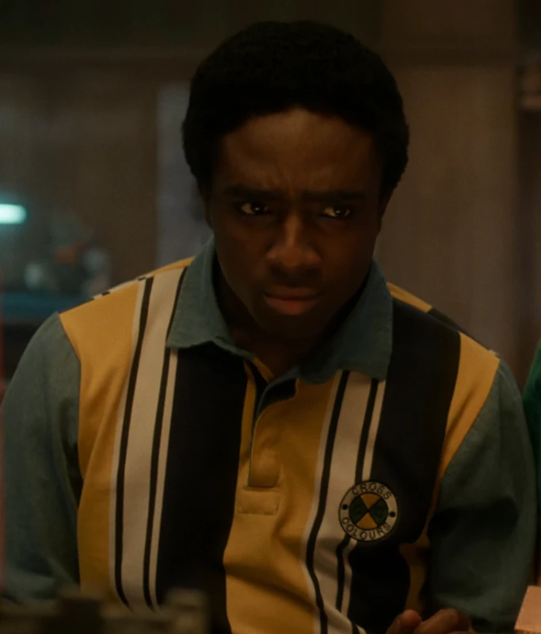
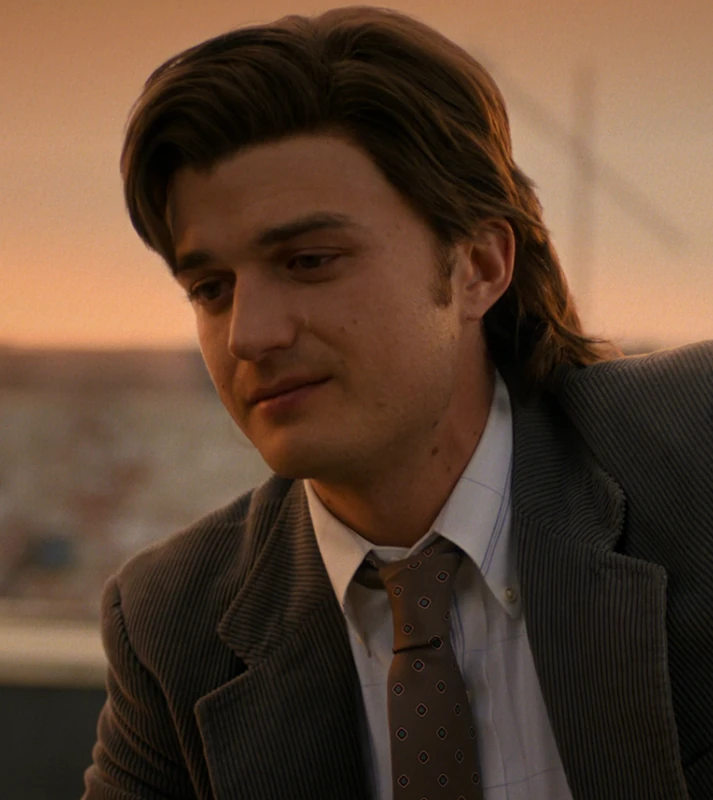
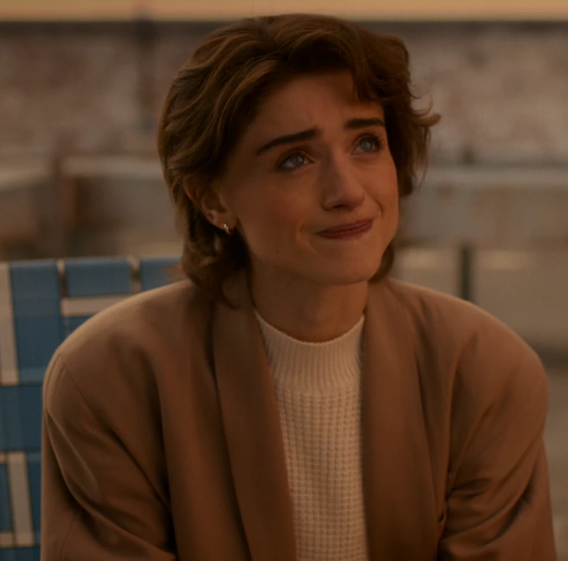
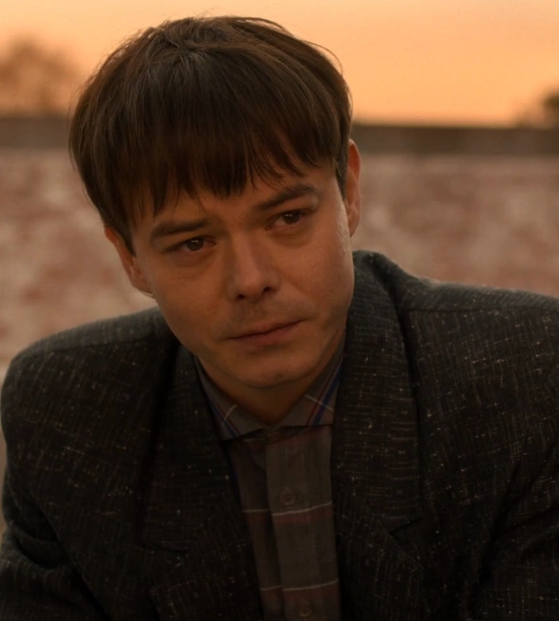
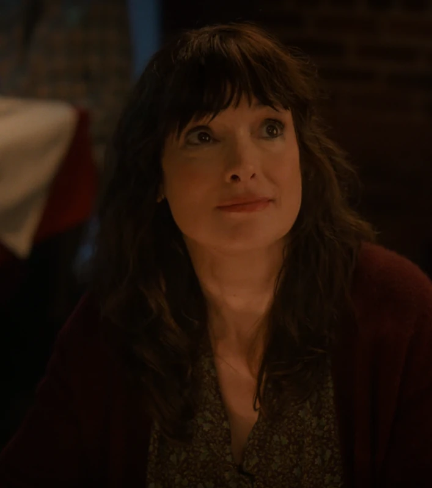
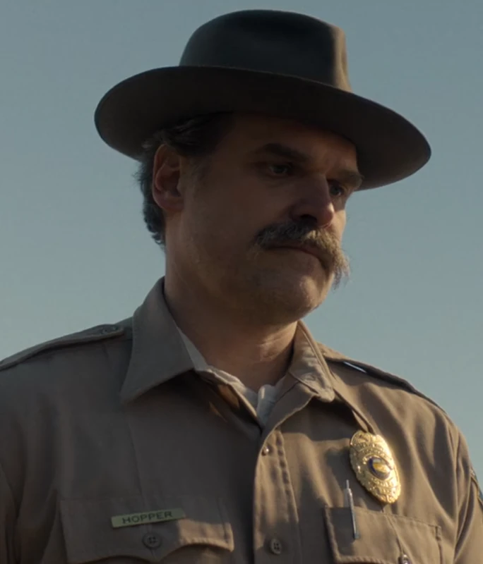

Disappearance and Encounter
Hawkins begins to change with Will's disappearance; the group meets Eleven and first approaches the Upside Down.
Favorite Series
A Netflix series that blends a 1980s small town, teenage friendship, secret experiments, supernatural danger, and sci-fi horror. After following it through the final season, what stays with me most is how ordinary people still choose to protect one another when everyday life cracks open.
Overview
Created by the Duffer Brothers, Stranger Things begins with the disappearance of a boy in the fictional town of Hawkins, Indiana. As friends, family, and the local police chief search for him, secret experiments, supernatural powers, another dark world, and a girl with extraordinary abilities come into view.
Later seasons expand the story from a missing-child mystery into a long confrontation between Hawkins and the Upside Down. The kids grow from basement D&D friends into people forced to carry real choices, while the adults add protection, sacrifice, and farewell to the emotional structure of the show.
The series is memorable not only for monsters and suspense, but also for the emotional bonds among children, family, and friends. Reviews and fan discussions often return to its nostalgia, ensemble friendship, music memory, and coming-of-age arcs, which make the horror feel like a shadow cast across adolescence rather than a collection of jump scares.
Five Seasons
Hawkins begins to change with Will's disappearance; the group meets Eleven and first approaches the Upside Down.
The trauma is not over, threats from another world continue to expand, and the ensemble grows closer.
Neon lights, summer break, and the mall make the surface brighter while danger moves closer underneath.
The story expands, and Vecna links past trauma with the origins of the Upside Down.
The final season returns to Hawkins and gathers the earlier questions into a last story of home, choice, and farewell.
Cast
 Mike Wheeler
Mike Wheeler
 Eleven / 11
Eleven / 11
 Dustin Henderson
Dustin Henderson

Lucas Sinclair Max Mayfield
Max Mayfield
 Will Byers
Will Byers

Steve Harrington Robin Buckley
Robin Buckley

Nancy Wheeler
Jonathan Byers
Joyce Byers
Jim HopperWhy I Like It
It is not only built on scares; it places mystery, experiments, memory, and monsters inside an emotionally grounded town. Each supernatural event still lands on human fear and attachment.
The characters are afraid and imperfect, but they still step forward when it matters. The arcs of Mike, Eleven, Will, Dustin, Lucas, and Max make every crisis feel like another choice in growing up.
Music, arcades, bicycles, malls, D&D, and old sci-fi energy give the series a strong nostalgic identity, turning Hawkins into a place that feels remembered rather than merely designed.
References: Netflix Official Page , Netflix Tudum Final Season Interview , Rotten Tomatoes Review Roundup and nostalgia discussion essay